Index of Topics
- - A -
- Adding a Target
Adding Resources to a Target
Adding Source Files
Auto Refresh
- C -
- Closing a Project
Configuring the Integrated Development Environment
- D -
- DOS - 16-bit Targets
DOS - 32-bit Targets
- E -
- Editing the Source File
Executing Special Commands
- F -
- The Files the Integrated Development Environment Uses
- G -
- Getting Help
Getting Started with a Short Tutorial
- H -
- How the Environment Operates
How the Integrated Development Environment Looks
- I -
- The IDE Menu Bar
The IDE Status Bar
The IDE Switches
The IDE Toolbar
Including Libraries in a Target
Invoking DOS Applications from the IDE under OS/2
Invoking Other Applications from the IDE
- L -
- Linux Targets
- M -
- Making Source Files
Making Targets
Marking a Source File for Remake
Marking a Target for Remake
Minimizing a Target
- O -
- The Open Watcom IDE Project Window
Open Watcom Integrated Development Environment
Opening a Project
OS/2 - 16-bit Targets
OS/2 - 32-bit Targets
Other Run Functions
- Q -
- Quitting the Open Watcom Integrated Development Environment
- R -
- Removing a Source File
Removing a Target
Renaming a Source File
Renaming a Target
Review of What Happened
Running a Target
- S -
- Saving a Project
Saving the Log
Saving the Project Under a New Name
Selecting a Source Revision Control System
Selecting Your Own Text Editor
Setting Application Parameters
Setting Source File Switches
Setting Target and Source File Switches
Setting Target Switches
Show Status Bar
Show Toolbar
A Simple Executable
Starting the Open Watcom Integrated Development Environment
Stopping the Make Function
- T -
- Targets and Image Types Supported by the IDE
- U -
- Updating the Project
Using Release and Development Switches
Using the Autodepend Switch
Using the IDE Log Window
Using the Information of the IDE from outside
Using the Open Watcom Integrated Development Environment
- V -
- Viewing Included Files
Viewing the Make Command for a Source File
Viewing the Make Command for a Target
- W -
- Win16 Targets
Win32 Targets
Win386 (Watcom Extender) Targets
Working with Source Files
Working with Targets
Open Watcom Integrated Development Environment
Software development normally involves managing a number of different files for each project. A project often includes
multiple source files, include files, and libraries. In addition, there are usually several programming tools involved:
compilers, linkers, preprocessors, debuggers, editors, and so on. But this is likely not new to you. What
will be new is the Open Watcom Integrated Development Environment (IDE).
The Open Watcom Integrated Development Environment is a software development tool that manages project files and language
tools. Although it is really a tool itself, the common term to describe it (and possibly the best analogy) is Development
Environment. By using the Open Watcom Integrated Development Environment, you have direct access to each of the
files relating to a project and all of the language tools you require to build your application.
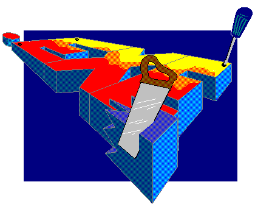
How the Environment Operates
The Open Watcom Integrated Development Environment has a graphical interface that combines file management and tool management.
An IDE session deals with a Project. A project can be generally defined as the collection of files and
necessary information that relates to the development of project components. However, a project is more than just a
graphical representation of a file list-it contains all of the underlying smarts to understand the interrelation of all files
associated with the project and to ensure that these files are up-to-date.
Each project component is referred to as a Target. An Integrated Development Environment target is made
up of the source files, include files, libraries, and MAKE instructions to create the target file (for example, ".exe",
".dll", ".lib", or ".hlp"). A project often has more than one target. Each target
can be set to create the associated target file for a specific destination platform.
Within a target, there are Sources. A source is an individual file (such as a ".c" or ".cpp"
file, but it can also be a ".bmp", ".rc", or ".lib" file) used to create the target file.
A target usually has more than one source.
How the Integrated Development Environment Looks
In the following illustration, the main window is the project window for a project entitled first.wpj.
The sub-window represents the target for this project, target1.exe. The source file for the target is listed
within the target window. In this project, there is only a single target with a single source file.
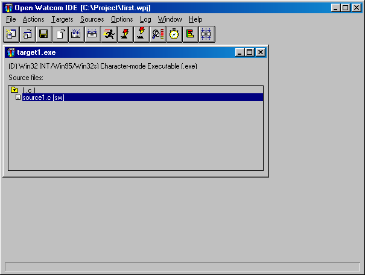
Figure 1. The Open Watcom IDE window displays project and target windows.
The language tools are available on the toolbar and the drop-down menus. For example, on the Sources menu, you
can work with the source that is selected in the target window. Here you can add a new source, remove or rename an
existing source, edit a source, and so on. A similar set of target actions are available in the Targets menu and project
actions are located in the File menu.
A single IDE session displays a project. If the project consists of a number of components, such as two executables
and one library, these appear as target sub-windows on the project window. Each target window displays the files necessary
to construct the target and associates files with a rule describing the construction mechanism based on filename extension.
For example, a filename with the extension ".exe" may associate with the rule for constructing executables,
or a filename with the extension ".lib" may associate with the rule for constructing static libraries.
Different projects can refer to the same target. If they do, either project can manipulate the shared target
and any changes to either project affect the shared target.
The Files the Integrated Development Environment Uses
The Open Watcom Integrated Development Environment creates and manages a project, referencing a number of targets.
The IDE uses filename extensions to represent projects and targets. The extension ".wpj" represents projects
and the extension ".tgt" represents targets. The IDE compiles and links the target in the target directory.
The project file (.wpj) contains the names of all of the target files related to the project, including housekeeping
information about the project and the current IDE session.
Each target file (.tgt) describes one target and includes the name and type of the target executable, a reference
to a rule describing how to build the target, and a list of relevant switches the rule uses. In addition, target files
also contain the names of all of the source files used to construct the target program, references to similar rules for compiling
them, and relevant switches.
In constructing targets, the Integrated Development Environment references a list of rules defined in a configuration
file, called ide.cfg. Each rule defines a command line used to do the construction and a list of actions you
can perform on the target program (such as make, run, or debug) or on the files in the item list (such as make or edit).
Additionally, rules refer to tools.
Tools define which command line switches you can use in the Open Watcom Integrated Development Environment.
Using the Open Watcom Integrated Development Environment
This section discusses the following topics:
- Starting the Open Watcom Integrated Development Environment
- Quitting the Open Watcom Integrated Development Environment
- The IDE Menu Bar
- The IDE Status Bar
- The IDE Toolbar
Starting the Open Watcom Integrated Development Environment
To start the Integrated Development Environment, double-click on the IDE icon. This opens the Open Watcom IDE Project
window.
Quitting the Open Watcom Integrated Development Environment
To exit the Integrated Development Environment, choose Exit from the File menu of the Open Watcom IDE Project window or
double-click on the system menu box on the same window.
The IDE's menu bar consists of the following eight menus:
- File
- Open new or existing projects, close and save projects, exit the IDE, and show or hide the toolbar and status bar
Actions
- Make all targets, run applications, and invoke other GUI Tools
Targets
- Work with targets, including setting switches and creating, removing, and renaming targets
Sources
- Work with sources, including setting switches and creating, removing, and renaming sources
Options
- Set switches for creating targets and sources
Log
- Perform functions relating to the IDE Log window
Window
- Refresh the contents of the IDE windows and view the targets currently available on the IDE window
Help
- Access on-line help information
The IDE Status Bar
The Status Bar appears along the bottom of the Open Watcom IDE Project window. This bar displays hint text for the
toolbar button and menu option over which your cursor is positioned. Status messages, such as Saving, Adding, and Executing
Log, appear in this bar so you are aware of what action the IDE is performing. A check mark beside the Show Status
Bar menu option in the File menu indicates that this feature is enabled. To disable this feature, choose the option
again from the File menu and the status bar disappears from the window.
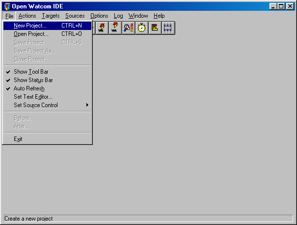
Figure 2. The IDE Status Bar can be toggled from the File menu.
In the Open Watcom IDE Project window, the toolbar appears below the menu bar when the Show Tool Bar option in the File
menu is activated (default). A check mark beside the menu option indicates that it is enabled. To disable this
feature, choose the option again from the File menu and the toolbar disappears.
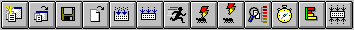
Figure 3. You can access thirteen IDE functions from the toolbar.
The following explains the function each icon performs, as well as the equivalent function on the menu bar.
- Create
- Create a new project. This is equivalent to the option New Project in the File menu.
Open
- Open an existing project. This is equivalent to the option Open Project in the File menu.
Save
- Save the current project. This is equivalent to the option Save Project in the File menu.
Edit
- Edit the selected source file. This is equivalent to the option Edit Text in the Sources menu.
Make Source
- Make the selected source file. This is equivalent to the option Make in the Sources menu.
Make Target
- Make the current target. This is equivalent to the option Make in the Targets menu.
Run
- Run the current target. This is equivalent to the option Run in the Targets menu.
Debug
- Debug the current target. This is equivalent to the option Debug in the Targets menu.
Remote Debug
- Debug the current target on a remote machine. This is equivalent to the option Remote Debug
in the Targets menu.
Browse
- Browse the current target. This is equivalent to the option Browse in the Targets menu.
Currently, browsing is supported by the Open Watcom C/C++ compilers only (Open Watcom FORTRAN 77 does not support browsing).
Sample
- Run and sample the current target. This is equivalent to the option Sample in the Targets menu.
Profile
- Profile the current target. This is equivalent to the option Profile in the Targets menu.
Make All
- Make all targets in the project. This is equivalent to the option Make All in the Actions menu.
Getting Started with a Short Tutorial
Perhaps the easiest way to understand how the Open Watcom Integrated Development Environment manages an entire project's
files and tools, is to work through a brief example. In this walk-through, you create and execute a simple C program
using the IDE. FORTRAN developers can follow along substituting FORTRAN code and file names where appropriate.
The session will help you understand the basic concepts of the IDE and the steps involved in project development.
The illustrations shown in this section are taken from the Windows environment. The OS/2 environment is very
similar with some minor differences. For example, in the OS/2 environment the IDE uses the OS/2 Editor rather than
Open Watcom's Windows Editor. Although this tutorial builds a Win32 executable, you can choose to build a Win16 or
OS/2 PM executable. The procedures to follow are not that much different. When the time comes to select the type
of target, simply choose an environment that you can run on your machine so that you can run your application to make sure
it works.
A Simple Executable
- (1)
- Double-click on the IDE icon in the Open Watcom Tools window.
The Open Watcom IDE Project window appears.
(2)
- Choose New Project from the File menu.
The Enter Project Filename dialog appears. The default project name is noname.wpj.
(3)
- Enter the filename \project\first in the File Name field and click on OK.
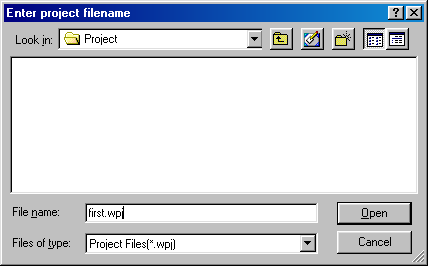
Figure 4. Enter the filename in the Enter Project Filename dialog.
This is the name of the project you are creating. If you enter a directory that doesn't exist (in this case,
\project), the IDE reveals a message box asking if you want to create the specified directory. Click on OK to
create the specified directory and project file.
- Note:
- The IDE looks for existing projects with the new name. If a project with the specified name already exists, the IDE
will prompt you rather than simply overwriting the existing project.
The project name appears in the title bar of the Open Watcom IDE Project window. Note that the IDE added the extension
".wpj" to the project name. The New Target dialog appears on the screen where you define a target for the
new project.
(4)
- Enter the desired target name in the Target Name field (we suggest target1). Next, select the appropriate
Target Environment (we suggest "Win32") and Image Type (we suggest "Character-mode Executable").
Click on OK when completed.
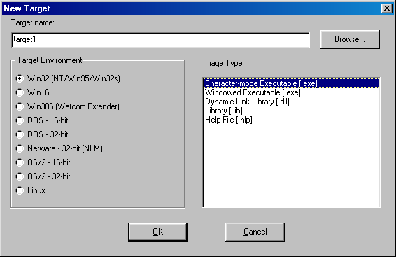
Figure 5. Select target name, target environment and image type
The New Target dialog closes and the IDE creates a target window entitled target1.exe for the new target.
Note that the IDE appends the appropriate extension to the target name for you once you click on OK. You can
now add sources to the target.
(5)
- Choose New Source from the Sources menu.
The Add File(s) dialog appears where you specify the sources you want to add to the target. Source names must be
filenames with extensions; pathnames are not required.
For the OS/2 IDE, you can add multiple source files to the target at one time by inserting a space between each filename
you enter. You can also use the file browser to add files by clicking on the Browse... button.
For all other systems, you can enter the names of the source files (with extensions) in the File Name field or you
can use the file browser to select files. The type of files displayed in file list window can be controlled by modifying
the List Files of Type field. Once you have typed a name in the File Name field or selected a name from the file list,
you can add it to the list of source files to be included by clicking the Add button. All files in the file list can
be added by clicking the Add All button. Individual names can be removed from the "add" list by selecting
them and clicking the Remove button.
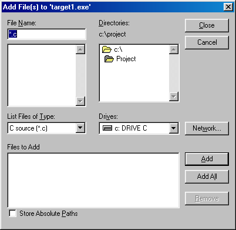
Figure 6. Select source file names in the Add File(s) dialog
(6)
- Enter the following source file names.
source1.c (or source1.for)
source2.c (or source2.for)
source3.rc
For the OS/2 IDE, enter all the names into the field separating each name by a space. Click on OK when done.
For all other systems, enter one name at a time into the File Name field, pressing Enter or clicking on Add after
each one has been entered. Click on Close when done.
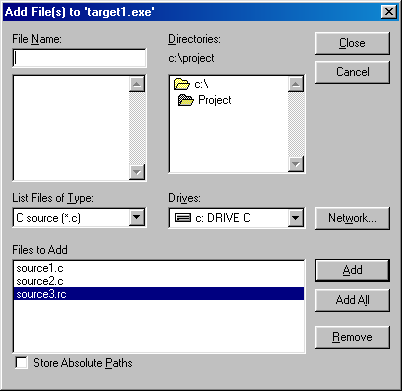
Figure 7. Enter one or several source files in the Add File(s) dialog.
The IDE adds the new source files to the target window, followed by the characters [n/a]. This indicates
that the source files are not available, meaning that the files do not yet exist. The indicators are:
- [n/a]
- This code appears if the file does not exist.
[r/o]
- This code appears if the file is Read Only.
[sw]
- This code appears if the user has set switches for the specified source file.
The Integrated Development Environment organizes the source files in the target window under headers according to the
filename extension. You can expand and collapse the file groups by clicking on the folder icon.
For this tutorial, we only need one source file, so now we will delete the extra files from the target.
(7)
- Click on the file source2.c (or source2.for) to select it then choose Remove Source from the Sources
menu.
A message box appears asking if you want to remove the selected source. Click on the Yes button to continue.
The IDE removes the selected source file from the target window. Now we can remove source3.rc. To do
this we will perform the function of removing all source files with a common extension.
(8)
- Click on the (.rc) header on the target window then choose Remove Source from the Sources menu.
A message box appears on the screen asking if you want to remove all of the ".rc" files. Click on the
Yes button to continue. The message box closes and the IDE removes the source3.rc file from the target window.
Now you can edit the remaining source file.
(9)
- Highlight the line source1.c (or source1.for) and choose Edit Text from the Sources menu to edit
the selected source file.
The Open Watcom Editor appears. The name of the selected source file, source1.c (or source1.for),
appears in the window. Here you can enter the source code.
Hint: You can also invoke the Open Watcom Editor by double-clicking on the source file that you
want to edit.
In this case, the Open Watcom Editor appears because the selected source file has a ".c" or ".for"
extension. Performing an edit can open different editors, depending on the extension of the selected source file.
(10)
- Enter the following lines of source code.
- Important:
- For the purpose of this session, we ask you to enter ii instead of i in the "print" line. This
will allow you to see how the Integrated Development Environment reacts to errors. You will then be able to correct
the error.
#include <stdio.h>
void main()
{
int i;
for (i=0; i<10; i++)
{
printf( "Value is %d\n", ii );
}
printf("Press Enter...\n");
getchar();
}
FORTRAN programmers can enter the following lines of code.
program main
implicit none
integer i
do i = 0, 9
print *, 'Value is ', ii
enddo
print *, 'Press Enter...'
read *
end
You can now save your work and close the Editor in one of the following two ways: close down the entire editor
or close down only the source file window. For this exercise, close only the source file window as follows.
(11)
- Choose Close from the File menu to close down the current source file window.
In both cases, if changes have been made to the file and not saved, a message prompts you to save the changes before exiting.
The advantage of closing only the Editor window is that the Editor continues to run. If you need to access it
again, you will not need to wait for it to go through the start-up procedures again.
- Important:
- You must save the file. The Open Watcom compilers do not access the source lines in the Editor's buffers.
(12)
- Minimize the Editor window.
or
- Click on the Open Watcom IDE Project window to bring it to the foreground.
(13)
- Choose Refresh from the Window menu.
This action forces the IDE to update the display with the state of all files. It is not necessary to use this function
if you have selected Auto Refresh in the File menu. If Auto Refresh is disabled then it may be necessary to alert the
IDE of the presence of the file on disk.
(14)
- Choose Save Project from the File menu to save your project up to this point.
You are now ready to make and run the target. Making a target is the act of constructing a target file. In
this case, it involves compiling the source file source1.c (or source1.for) using the appropriate Open
Watcom compiler and linking the target executable using the Open Watcom Linker.
(15)
- Highlight the line source1.c and choose C Compiler Switches... from the Source Options item located
under the Sources menu to set compile options.
FORTRAN programmers: Highlight the line source1.for and choose Fortran Compiler Switches...
from the Source Options item located under the Sources menu to set compile options.
The C Compiler Switches dialog appears. If you are using FORTRAN, the Fortran Compiler Switches dialog appears.
(16)
- Click on the ">>" button until the 7. CodeGen Strategy Switches dialog appears.
Click on the "Multithreaded application [-bm]" checkbox button to select this option.
FORTRAN programmers: Click on the ">>" button until the 9. Application Type Switches
dialog appears. Click on the "Multithreaded application [-bm]" checkbox to select this option.
A check-mark appears in the checkbox.
Note: Selecting this option is for demonstration purposes only, it is not required for this simple application.
Click OK to close the dialog.
(17)
- Choose Make from the Targets menu.
The IDE constructs a makefile based on its knowledge of the target and construction rules and then invokes the Open Watcom
Make utility to create target1.exe. The IDE Log window appears at the bottom of the Open Watcom IDE Project
window. Use this window to monitor the procedure. Since you entered ii instead of i, the MAKE fails.
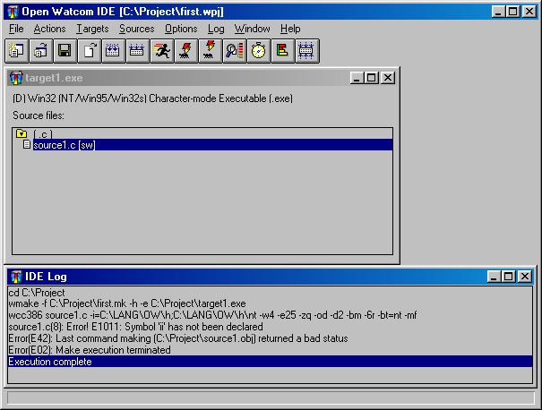
Figure 8. Use the IDE Log window to monitor the make procedure.
(18)
- Highlight the error message in the IDE Log window and choose Help on Message from the Log menu.
Help information regarding the error message appears on the screen.
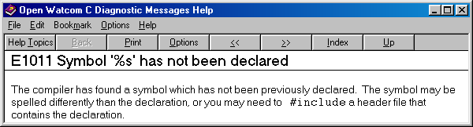
Figure 9. Help for error messages is available
Close the Help window and edit the source file as follows.
(19)
- Highlight the error message in the IDE Log window and choose Edit File from the Log menu.
or
- Double-click on the error message in the IDE Log window.
The Open Watcom Editor opens and the cursor appears at the position of the error. Edit and correct the error and
then save the file again. Minimize the Editor window and bring the IDE window to the foreground.
(20)
- Choose Make from the Targets menu again.
This time, the procedure creates the executable file target1.exe.
(21)
- Choose Run from the Targets menu.
The IDE executes the program target1.exe.
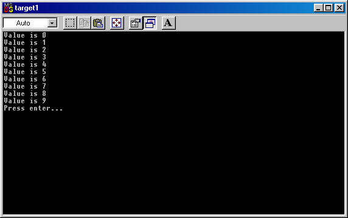
Figure 10. Run from the Targets menu runs the target.
The program you wrote is a character mode application and its output appears in a separate console window. You
are now ready to debug your target program. You probably do not need to debug this simple program with the Open Watcom
Debugger but go through the steps so that you know what to do for more complex programs.
The IDE has several debugging information options which it uses as defaults when it is started. The first thing
to do is check to make sure that your application compiled with the default debugging information activated.
(22)
- Choose Target Options from the Targets menu to activate the Target Options menu.
The option Use Development Switches should appear in grey text with a check mark next to it. Development Switches
automatically include debugging information in the target. If you were to select Use Release Switches, the IDE would
select options useful for a production version of your program. Selecting this option turns the text grey and places
a check mark beside it. The IDE uses the development switches by default.
- Note:
- For the purpose of this session, you should make the target with the development switches on. If this is not the option
selected, select it and remake the target before debugging.
(23)
- Choose Debug from the Targets menu.
The IDE starts the Open Watcom Debugger.
(24)
- Choose Step Over from the Run menu of the Open Watcom Debugger to step through the code. Choose Go from
the Run menu of the Open Watcom Debugger to continue execution to the end of the code. For more information on using
the Open Watcom Debugger, refer to the Open Watcom Debugger User's Guide. The task has completed running
appears when the program has completed execution.
(25)
- Choose Exit from the File menu to terminate the debugging session.
The Open Watcom Debugger closes and you return to the Open Watcom IDE Project window. You can now exit the IDE.
(26)
- Choose Exit from the File menu to exit the IDE.
The IDE prompts you to save the current project if you have not saved it since the last change.
Review of What Happened
In this session, you created a project called first.wpj. This project had one target called target1.exe,
a 32-bit Windows executable (unless you specified another target type). Using the Open Watcom Editor, you entered and
edited the source text in a file called source1.c or source1.for (if you tried the FORTRAN example).
You compiled and linked it into an executable program using the Open Watcom Make utility, a Open Watcom compiler, and the
Open Watcom Linker. You ran it directly and under the control of the Open Watcom Debugger.
When you saved the project, the Open Watcom Integrated Development Environment created the following permanent files:
- first.wpj
- Describes the screen layout and refers to a file called target1.tgt
target1.tgt
- Describes the target executable target1.exe and all switches required to link it. It also describes source1.c
(or source1.for) and the switches required to compile it.
The Open Watcom IDE Project Window
When you first start the Open Watcom Integrated Development Environment, an empty Open Watcom IDE Project window opens.
This window represents the project that is currently open in the IDE. The name of the current project appears
in the title bar of this window.
The first thing you need to do is open a project for the Open Watcom IDE Project window. This can be a new project
you create or an existing project you open.
- Important:
- You can have only one project open at a time in the IDE. If you attempt to open or create a project while one already
exists in the IDE window, a message box appears informing you that the IDE is closing the current project and asks if you
want to save any changes made to that project. Choose Yes, No, or Cancel in this box to continue.
Opening a Project
- To create a new project:
-
(1)
- Choose New Project from the File menu.
The Enter Project Filename dialog appears on the screen where you enter the name of the project you are creating.
(2)
- Enter the desired name in the File Name field and choose the desired directory.
All projects must have the extension ".wpj".
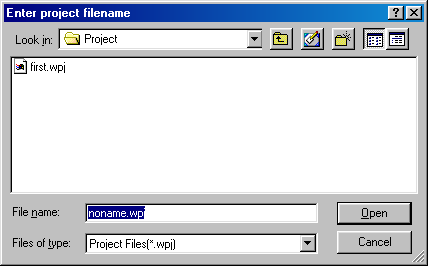
Figure 11. Use the Enter Project Filename dialog to create a new project.
(3)
- Click on OK when completed.
The Enter Project Filename dialog closes and the new project name appears in the title bar of the Open Watcom IDE Project
window. A New Target dialog opens on the screen where you add a target to the new project. Refer to the section
Adding a Target for more information.
- To open an existing project:
-
(1)
- Choose Open Project from the File menu.
The Open dialog appears on the screen where you select the project you want to open.
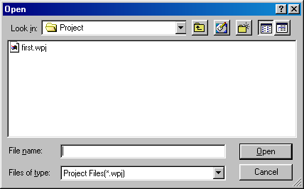
Figure 12. Use the Open dialog to open an existing project.
(2)
- Choose the desired project.
All projects have the extension ".wpj".
(3)
- Click on OK when the desired project appears in the File Name field.
The Open dialog closes and the name of the selected project appears in the title bar of the Open Watcom IDE Project window.
If targets exist for the selected project, windows representing the targets appear in the main window.
Closing a Project
- To close the current project:
-
(1)
- Choose Close Project from the File menu.
The IDE removes all target windows for the current project from the Open Watcom IDE Project window. The project
name disappears from the title bar and the window is empty.
Saving a Project
There are two ways of saving your current project. You can perform a simple save where the project is updated with
any changes made since the last save or you can save the project under a different project name using the Save Project As
function.
Updating the Project
- To perform a simple save on your project:
-
(1)
- Choose Save Project from the File menu.
The IDE updates the project specified in the title bar. The status bar along the bottom of the window indicates
that the save function is being executed.
Saving the Project Under a New Name
- To save the current project using a different name:
-
(1)
- Choose Save Project As from the File menu.
The Save As dialog appears on the screen where you specify the file name by which you want to save the current project.
(2)
- Enter the desired project name in the File Name field.
This is the new name by which you want to save the current project. This can be the name of a new project or an
existing project.
- Important:
- Entering the name of an existing project overwrites the contents of that project with the contents of the current project.
(3)
- Choose the desired directory for the project using the Directories list on the Save As dialog.
(4)
- Click on OK when completed.
The Save As dialog closes and the new project name appears in the title bar of the Open Watcom IDE Project window.
Working with Targets
Once you have created a project, it is a simple matter to add additional targets. You can also change the name of
a target, remove targets, change the target environment, and change the image type. This section discusses the following
topics:
- Adding a Target
- Minimizing a Target
- Removing a Target
- Renaming a Target
- Marking a Target for Remake
- Making Targets
- Running a Target
Adding a Target
You add targets to the current project using the New Target dialog. When you create a new project, this dialog appears
automatically. You have two options when adding targets to a project: you can either enter the name of a new
target or you can choose an existing target, previously created in another project. This section describes both methods
for adding a target.
- To add a new target to the current project:
-
(1)
- Choose New Target from the Targets menu.
The New Target dialog appears on the screen where you enter the details of the target you are adding.

Figure 13. Enter the new target details in the New Target dialog.
(2)
- Enter the target name in the Target Name field.
Enter the entire pathname to ensure the directory is created where you want. Depending on the nature of the target,
it may or may not be able to share the same directory as other pre-existing targets. Generally, if the target shares
one or more of the same source files as other targets in the project, then it must be placed in its own subdirectory.
The object files that are produced for the target may have different attributes than a pre-existing target's object files
(e.g., 16-bit vs 32-bit). This is why the target should be placed in a separate subdirectory.
(3)
- Select the desired Target Environment and Image Type as desired.
(4)
- Click on OK when the Target Name, Target Environment and Image Type fields are correct.
If you specify a new directory in the target pathname, a message box appears asking if you want to create the specified
directory. Choose Yes or No to continue. A window representing the new target appears on the Open Watcom IDE
Project window. The target name appears in the title bar.
The first line in this window describes the target. It specifies the current mode, the target type. The
current mode is represented by either the letter D or R which appears in parentheses in front of the target type. The
letter D indicates that the target is placed in Development mode. The letter R indicates that the target is placed
in Release mode. The rest of the window displays the source files for the target.
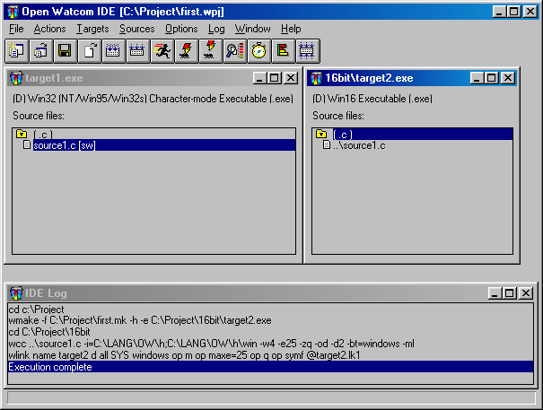
Figure 14. A project may have multiple targets.
- To add an existing target to a current project:
-
(1)
- Choose New Target from the Targets menu.
The New Target dialog appears on the screen.
(2)
- Click on the Browse button.
The Enter Target Filename dialog appears on the screen. This dialog allows you to browse the directories and files
and select the ".tgt" file for the target you want to add.
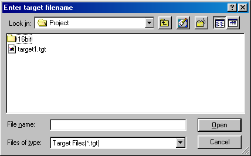
Figure 15. Choose an existing target from the Pick Target Filename dialog for the current
project.
(3)
- Click on the desired target to select it.
The selected target appears in the File Name field.
(4)
- Click on OK to process the target selection.
The Enter Target Filename dialog closes.
(5)
- Click on OK to close the New Target dialog.
A window representing the new target appears on the Open Watcom IDE Project window. The target name appears in the
title bar.
The first line in this window describes the target. It specifies the current mode and the target type.
The current mode is represented by either the letter D or R which appears in parentheses in front of the target type.
The letter D indicates that the target is placed in development mode. The letter R indicates that the target is placed
in Release mode. The rest of the window displays the source files for the target.
Minimizing a Target
If you are working with a project that has multiple targets, the Open Watcom IDE Project window can become cluttered.
You can tidy your window by minimizing the target windows that you are not currently using.
- To minimize a target window:
-
(1)
- Click on the system box in the upper left-hand corner of the target window you want to close.
A menu appears listing the functions you can perform on the selected window.
(2)
- Choose Minimize from the menu.
The selected target window closes and an icon appears along the bottom of the screen representing that window. The
name of the target appears on or under the icon.
(3)
- Double-click on the icon to open the target window again.
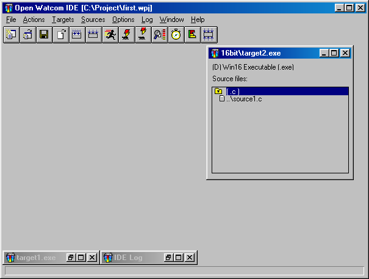
Figure 16. Minimize targets to reduce clutter in the project window.
Removing a Target
The procedure for removing a target from a project is simple. If your project has multiple targets, it is important
to ensure that the target you want to remove is the one selected. Removing a target does not permanently delete the
target, it simply removes it from the current project. If the target is attached to multiple projects, those projects
will not be affected by the removal of the selected target from the current project.
- To remove a target from the current project:
-
(1)
- Click once on the target window you want to remove from the project.
The title bar of the selected target window is highlighted.
(2)
- Choose Remove Target from the Targets menu.
A message box appears on the screen asking if you really want to remove the selected target.
(3)
- Choose OK to continue.
The message box closes and the selected target window disappears from the Open Watcom IDE Project window.
Renaming a Target
When renaming a target, you can either give it a new name or you can give it the name of an existing target. Choosing
an existing target name overwrites the contents of the existing target with the contents of the current target.
- To rename a target:
-
(1)
- Click once on the target window you want to rename.
The title bar of the selected target window is highlighted.
(2)
- Choose Rename Target from the Targets menu.
The Rename Target dialog appears. The Target Name, Target Environment, and Image Type of the selected target appear
in the appropriate fields.
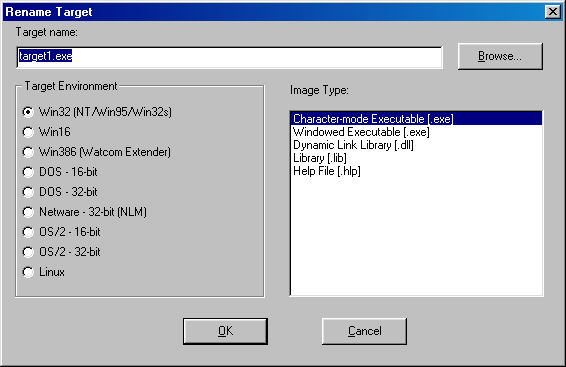
Figure 17. Change a target's name using the Rename Target dialog.
(3)
- Enter the new target name in the Target Name field.
or
- Click on the Browse button and select an existing target name; click on OK when completed.
The selected or entered target name appears in the Target Name field.
(4)
- Verify that the Target Environment and Image Type are correct.
(5)
- Click on OK on the Rename Target window.
The Rename Target dialog closes. The title bar of the selected target window now displays the new target name.
Marking a Target for Remake
Marking a target for remake ensures that the IDE will perform the link the next time you make that target or make all
targets. This function is necessary if you are not using the Autodepend function in the Setup Target submenu under
the Targets menu. By marking a target for remake, you control when and which targets need to be remade.
- To mark a target for remake:
-
(1)
- Click once on the target window you want to mark.
The title bar of the selected target window is highlighted.
(2)
- Choose Mark Target for Remake from the Targets menu.
A message box appears asking if you want to also mark all of the source files of the selected target.
(3)
- Choose Yes or No to continue.
Choosing Yes marks all of the source files for the selected target as well as the target itself. This means that
the next time you do a make, the source files for the selected target will be compiled. Choosing No marks only the
selected target for remake. In both cases, the message box closes and you return to the Open Watcom IDE Project window.
Making Targets
The Make function in the Targets menu creates an executable for the selected target. When you perform this function,
the IDE compiles the source files for the selected target into object files. The object files are then linked together
to create the target file.
There are two make functions available to you for targets: Make and Make All. The Make All function in
the Actions menu tells the IDE to compile and link all of the targets for the current project. This can be a lengthy
process, depending upon the number of targets in your project, so you may choose to only make targets to which changes have
been made. This enables you to see if they can be made successfully.
Performing the Make function opens the IDE Log window which allows you to monitor the progress of the make.
- To make a single target:
-
(1)
- Click once on the target window you want to make to select it.
The title bar of the selected target window is highlighted.
(2)
- Choose Make from the Targets menu.
The IDE Log window opens along the bottom of the Open Watcom IDE Project window. In the log window you can monitor
the make procedure. Execution Complete appears in the IDE Log window when the make is completed on the selected
target. If the make is successful an executable file for the selected target can be found in the directory associated
with the target window.
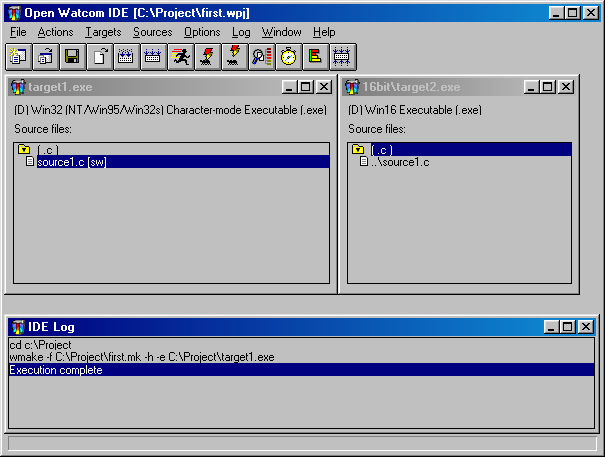
Figure 18. Use the IDE Log window to monitor the make procedure.
- To make all targets for the current project:
-
(1)
- Choose Make All from the Actions Menu.
The IDE Log window opens along the bottom of the Open Watcom IDE Project window. In the log window you can monitor
the make procedure. Execution Complete appears in the IDE Log window when the make is completed on the targets.
If the make is successful an executable file for each target in the project can be found in the directory associated
with the target window.
Viewing the Make Command for a Target
With the IDE you can use the Show Make Command function to display the makefile commands for the selected target.
These are the commands that will be used to compile the selected target when you choose the function Make from the Targets
menu or Make All from the Actions menu.
- To view the make commands for targets:
-
(1)
- Click once on the target window whose makefile commands you want to view.
The title bar of the selected target window is highlighted.
(2)
- Choose Target Options from the Targets menu.
A submenu appears on the screen from the Target Options menu.
(3)
- Choose Show Make Command from the Target Options submenu.
The Target Command dialog appears on the screen. This dialog displays the makefile commands for the selected target.
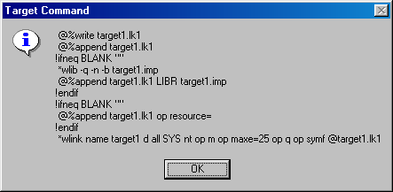
Figure 19. The Target Command dialog displays the makefile commands for the selected target.
(4)
- Click on OK to close the dialog.
Running a Target
Once you have compiled and linked your target using the Make function, you can run the target to execute the program.
- To run a target:
-
(1)
- Click once on the target window you want to run.
The title bar of the selected target window is highlighted.
(2)
- Choose Run from the Targets menu.
The IDE executes the target program.

Figure 20. Run from the Targets menu runs the target.
Other Run Functions
In the Open Watcom Integrated Development Environment you can run programs other than the targets in your current project
window. Use the run functions in the Actions menu to specify the program you want to run. The Run item runs the
specified program under your host environment. The Run Batch item runs the specified program in the IDE Log window.
- To run other programs in the IDE:
-
(1)
- Choose Run from the Actions menu.
or
- Choose Run Batch from the Actions menu.
A Run or Run Batch dialog appears on the screen. These dialogs are identical.
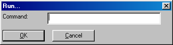
Figure 21. Use the Run (or Run Batch) dialog to run other programs in the IDE.
(2)
- Enter the name of the program you want to run in the Command field.
(3)
- Click on OK to run the specified program.
The dialog closes and the specified program runs, either under the host environment or in the IDE Log window.
Setting Application Parameters
The Targets and Sources menus and their submenus are divided into sections. Horizontal lines separate each section.
The menu items in the bottom sections of the Targets and Sources menus are actions that you can perform on the selected
target or source file in the current project. If there are switches that can be set for these actions, there are corresponding
menu item entries in the bottom sections of the submenus. Choose Target Options and Source Options from their respective
menus to display the submenus.
Working with Source Files
Once your project has a target you need to add source files to the target. The procedure for adding a source file
to a target is simple. Once you have source files that make up your target, you can also change the name of a source
file and remove source files. This section discusses the following topics:
- Adding Source Files
- Removing Source Files
- Renaming a Source File
- Marking a Source File for Remake
- Making Source Files
- Viewing Included Files
Adding Source Files
You add source files to the selected target (the target whose title bar is currently highlighted) using the Add File(s)
dialog. The current project must have a target in order to use the New Source function. You have two options
when adding source files to a target: you can either enter the name of a new source file or you can choose an existing
source file. When adding existing source files you can use the file browser, type sources one at a time into the Add
File(s) dialog, or use wild cards in the Add File(s) dialog. This section describes all methods for adding source files.
The extension you use with the source file name determines the compiler that the IDE uses to create the target.
For example, the ".c" extension, invokes the Open Watcom C compiler to make the target. You can specify several
different compilers:
- xxx.asm
- The ".asm" extension invokes the Open Watcom Assembler.
xxx.c
- The ".c" extension invokes the Open Watcom C compiler.
xxx.cpp
- The ".cpp" extension invokes the Open Watcom C++ compiler.
xxx.for
- The ".for" extension invokes the Open Watcom FORTRAN 77 compiler.
xxx.hlp
- The ".hlp" extension invokes either the Win16, OS/2, or Win32 compiler.
xxx.rc
- The ".rc" extension invokes the Open Watcom resource compiler.
xxx.res
- The ".res" extension invokes the Open Watcom Resource Editor.
xxx.sqc
- The ".sqc" extension invokes the embedded SQL preprocessor and the Open Watcom C compiler.
xxx.sqp
- The ".sqp" extension invokes the embedded SQL preprocessor and the Open Watcom C++ compiler.
- To add new source files to the selected target:
-
(1)
- Choose New Source from the Sources menu.
The Add File(s) dialog appears where you specify the name(s) of the source file(s) you are adding. Source names
must be filenames with extensions; pathnames are not required.
For the OS/2 IDE, you can add multiple source files to the target at one time by inserting a space between each filename
you enter into the filenames field.
For all other systems, you can enter the names of the source files (with extensions) in the File Name field, one at
a time. Once you have typed a name in the File Name field, you can add it to the list of source files to be included
by clicking the Add button. Individual names can be removed from the "add" list by selecting them and clicking
the Remove button.
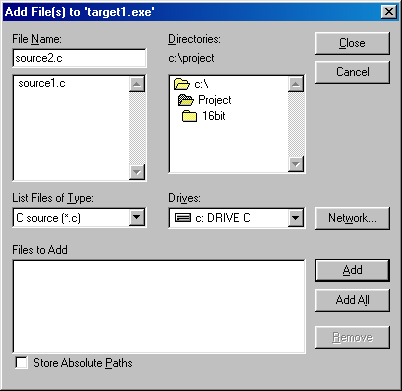
Figure 22. Add one or several source files to a target using the Add File(s) dialog.
(2)
- Enter the source file name(s).
For the OS/2 IDE, enter all the names into the field separating each name by a space. Click on OK when done.
For all other systems, enter one name at a time into the File Name field, pressing Enter or clicking on Add after
each one has been entered. Click on Close when done.
The Add File(s) dialog closes and the selected source file(s) appear in the selected target window on the Open Watcom
IDE Project window.
The source files are grouped by their file extensions and appear in alphabetical order. You can expand and collapse
the list of source files by clicking on the folder icon to the left of the header.
- To add existing source files to the selected target using the file browser:
-
(1)
- Choose New Source from the Sources menu.
The Add File(s) dialog appears on the screen.
For the OS/2 IDE, click on the Browse button and the Pick Filename dialog appears on the screen. This dialog
allows you to browse the directories and files and select the source file(s) you want to add to the current target.
Click on the desired source file to select it. The selected source file(s) appear highlighted in the Pick Filename
dialog. When done browsing files, click on OPEN to add the selected files. The Pick Filename dialog closes.
When done selecting files, click on OK.
For all other systems, you can use the file browser to select files. The type of files displayed in file list
window can be controlled by modifying the List Files of Type field. Once you have selected a name from the file list,
you can add it to the list of source files to be included by clicking the Add button. All files in the file list can
be added by clicking the Add All button. Individual names can be removed from the "add" list by selecting
them and clicking the Remove button. When done, click on Close to add the selected files.
The Add File(s) dialog closes and the selected source file(s) appear in the selected target window on the Open Watcom
IDE Project window.
The source files are grouped by their file extensions and appear in alphabetical order. You can expand and collapse
the list of source files by clicking on the folder icon to the left of the header.
- To add existing source files to the selected target using wild cards:
-
(1)
- Choose New Source from the Sources menu.
The Add File(s) dialog appears on the screen.
For the OS/2 IDE, enter the source file name pattern in the filename(s) field using wild cards. For example,
enter sou*.c to add all source files whose name begins "sou" and have a ".c" extension to the
current target. When done, click on OK to add the selected files.
Hint: Even when entering wild cards, you can add multiple source file groups by separating each
entry with one space (e.g., sou*.c sou*.cpp).
For all other systems, enter the source file name pattern in the File Name field using wild cards. For example,
enter sou*.c to select all source files whose name begins "sou" and have a ".c" extension.
Click on the Add All button to add all the names that match the wild card pattern. Individual names can be removed
from the "add" list by selecting them and clicking the Remove button. When done, click on Close to add the
selected files.
The Add File(s) dialog closes and the selected source file(s) appear in the selected target window on the Open Watcom
IDE Project window.
The source files are grouped by their file extensions and appear in alphabetical order. You can expand and collapse
the list of source files by clicking on the folder icon to the left of the header.
Removing a Source File
The procedure for removing a source file from a project is simple. You can remove one source at a time or you can
remove all source files with a common file extension from the target. Removing a source file does not permanently delete
the it. The IDE simply removes it from the current target. If the removed source file is common to multiple targets,
the other targets will not be affected by the removal of the selected source file.
- To remove one source file from a target:
-
(1)
- Click once on the source file you want to remove from the target.
The selected source file appears highlighted in the target window.
(2)
- Choose Remove Source from the Sources menu.
A message box appears asking if you are sure you want to remove the selected source file.
(3)
- Click on the Yes button.
The message box closes and the IDE removes the selected source file from the target window.
- To remove a group of source files from a target:
-
(1)
- Click once on the header to the right of the folder icon of the source files group you want to remove from the target.
The selected header appears highlighted in the target window.
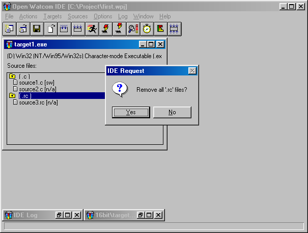
Figure 23. Click on the header to remove all source files with a common file extension.
(2)
- Choose Remove Source from the Sources menu.
A message window appears asking if you want to remove all source files with the selected file extension.
(3)
- Choose OK to continue.
The message box closes and the IDE removes the selected group of source files from the target.
Renaming a Source File
When renaming a source file, you can either give it a new name or you can give it the name of an existing source file.
Choosing an existing source file name overwrites the contents of that source file with the contents of the current
source file.
- To rename a source file:
-
(1)
- Click once on the source file you want to rename.
The selected source file appears highlighted in the target window.
(2)
- Choose Rename Source from the Sources menu.
The Rename File dialog appears where you enter the new name of the selected source file.
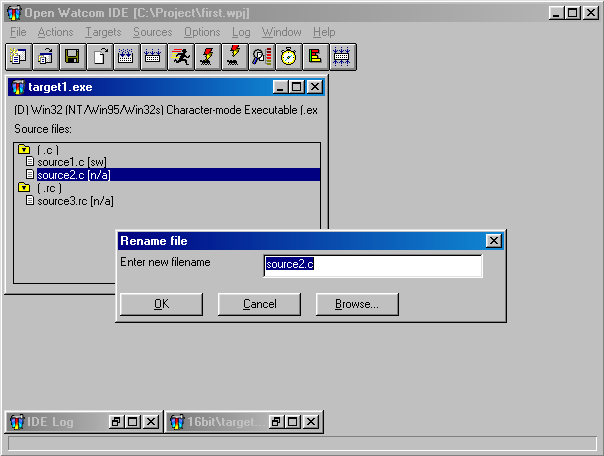
Figure 24. Use the Rename File dialog to rename the selected source file.
(3)
- Enter the new source file name in the field.
or
- Click on the Browse button and select an existing source file name; click on OK when completed.
The selected or entered source file name appears in the Rename File dialog.
(4)
- Click on OK on the Rename File dialog.
The Rename File dialog closes. The target window displays the updated source file.
Marking a Source File for Remake
The Mark Source for Remake function in the Sources menu enables you to mark a source file to ensure that the IDE will
recompile it the next time you make the target. This function is useful because although changes may not have been
made to the selected source file, changes may have been made to a source file on which the selected source file depends.
This function is necessary if you are not using the Autodepend function in the Target Options submenu under the Targets
menu. Marking source files for remake gives you control over when and which source files need to be remade.
With the Mark function you can mark an individual source file or a group of source files with a common file extension.
- To mark a source file or a group of source files for remake:
-
(1)
- Click once on the source file you want to mark.
or
- Click once on the header of the group of source files you want to mark.
The selection is highlighted in the target window.
(2)
- Choose Mark Source for Remake from the Sources menu.
If you selected a group of source files to mark, a message box appears asking if you want to also mark all of the source
files of the specified extension.
(3)
- Choose Yes to continue.
The message box disappears and the IDE marks all of the source files in the selected group to be recompiled.
Making Source Files
The Make function in the Sources menu enables you to compile a selected source file into an object file. You can
also perform the Make function on a group of source files with a common file extension.
Performing the Make function opens the IDE Log window which allows you to monitor the progress of the make.
- To make source files:
-
(1)
- Click once on the source file you want to make.
or
- Click once on the header of the group of source files you want to make.
The selected source files are highlighted in the target window.
(2)
- Choose Make from the Sources menu.
The IDE Log window opens along the bottom of the Open Watcom IDE Project window. In the log window you can monitor
the make procedure. Execution Complete appears in the IDE Log window when the make is completed on the selected
source files.
- To make all targets for the current project:
-
(1)
- Choose Make All from the Actions Menu.
The IDE Log window opens along the bottom of the Open Watcom IDE Project window. In the log window you can monitor
the make procedure. Execution Complete appears in the IDE Log window when the make is completed on the targets.
If the make is successful an executable file for each target in the project can be found in the directory associated
with the target window.
Viewing the Make Command for a Source File
With the IDE you can use the Show Make Command function to display the makefile commands for the selected source file.
These are the commands that will be used to compile the selected source file when you choose the function Make from
the Sources menu.
- To view the make commands for source files:
-
(1)
- Click once on the source file whose makefile commands you want to view.
or
- Click once on the header of the group of source files whose makefile commands you want to view.
The selected source file or group header is highlighted.
(2)
- Choose Source Options from the Sources menu.
A submenu appears on the screen from the Source Options menu.
(3)
- Choose Show Make Command from the Source Options submenu.
The Source Command dialog appears on the screen. This dialog displays the makefile commands for the selected source
file or source file header.
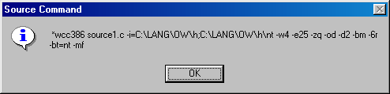
Figure 25. The IDE Source Command dialog displays the makefile commands for the selected
source file(s).
(4)
- Click on OK to close the dialog.
Viewing Included Files
The Included Files function in the Sources menu enables you to select a source file and view a list of all of the files
included by that source file. This is a list of all files on which the selected source file depends. From this
list you can select included files and edit them.
Because the selected source file depends on the files in this list, it is necessary to remake it if changes are made
to any of the included files. If you are using the Autodepend function, the IDE automatically remakes the source file
if any of the included files are modified.
- To view the list of included files:
-
(1)
- Click on the source file whose list of included files you want to view.
The selected source file is highlighted in the target window.
(2)
- Choose Included Files from the Sources menu.
The Files Included dialog appears on the screen. This dialog lists all source files on which the selected source
files depends.
- To edit a source file from the File Included dialog:
-
(1)
- Click once on the source file in the included files list that you want to edit.
The selected source file is highlighted in the File Included dialog.
(2)
- Click on OK.
or
- Double-click on the selected source file.
The Files Included dialog closes and the IDE invokes the appropriate editor for the selected included file. The
editor appears and you can edit the file. Close the editor when you are finished making the desired changes to return
to the Open Watcom IDE Project window.
Using the IDE Log Window
When you compile a target or source file, the IDE Log window appears along the bottom of the screen. Once this window
is open it remains on your screen until you close the project. However, to maximize your project window space you can
minimize the IDE Log window when it is not being used.
The Log menu contains three functions that you use in relation to the IDE Log window. This section discusses
the following functions:
- Stopping the Make Function
- Getting Help
- Editing the Source File
- Saving the Log
Stopping the Make Function
Choosing to make a source file, target, or all targets can be a lengthy process. The Stop function in the Log menu
gives you the opportunity to cancel the make function once it has started. This is a useful function in case you decide
that you do not want to continue with the make.
- To stop the make function:
-
(1)
- Choose Stop from the Log menu.
A message box appears asking if it is okay to interrupt the executing process.
(2)
- Click on OK to continue.
The message box closes and the IDE stops the make function. The IDE Log window displays the message Stop Invoked
followed by the message Execution Complete.
Getting Help
The Help on Message function in the Log menu gives you access to on-line help information for the selected error message
in the IDE Log window.
- To reveal help for an error message:
-
(1)
- Click once on the error message in the IDE Log window on which you want information.
The selected error message is highlighted in the IDE Log window.
(2)
- Choose Help on Message from the Log menu.
This opens the Help window. Information on the selected error message appears in this window.
(3)
- Choose Close from the system menu on the Help window to cancel the Help facility.
The Help window closes and you return to the IDE Log window.
Editing the Source File
The Edit File function in the Log menu allows you to select an error message in the IDE Log window and edit the corresponding
source file. This function invokes the appropriate editor for the source file and positions your cursor in the source
code where the error occurred (if the error message contained line and column information).
- To edit a source file:
-
(1)
- Click once on the error message in the IDE Log window that you want to edit.
The selected error message is highlighted in the IDE Log window.
(2)
- Choose Edit File from the Log menu.
or
- Double-click on the selected error message.
Both of these actions open the appropriate editor. If the Open Watcom Editor appears and the error message contained
column and line details, your cursor will be positioned at the error in the source code.
(3)
- Make the required changes to the source file and exit the Editor.
Saving the Log
The Save Log As function in the Log menu allows you to save the contents of the Log window into a file.
- To save the log:
-
(1)
- Choose Save Log As from the Log menu.
The Save Log As dialog appears where you specify the filename by which you want to save the contents of the Log window.
(2)
- Enter the desired log name in the File Name field.
(3)
- Specify the directory to which you want to save the log.
(4)
- Click on the OK button.
The IDE closes the Save Log As dialog and saves the current log as specified
The IDE Switches
There are a number of different switches you can set in the Open Watcom Integrated Development Environment. Switches
enables you to change the way the various tools, such as compilers and linkers, perform their jobs. The switches discussed
in this section are:
- Release and Development Switches
- Target and Source File Switches
- The Autodepend Switch
This section discusses the different switches available in the IDE and how you can use them.
Using Release and Development Switches
There are two sets of switches the IDE can use during the make process: Development and Release switches.
You are able to specify different switches in each set for each target in your project. The letters D and R in the
target window to the left of the target type indicate which set of switches is being used. You choose the switches
you want the IDE to use from the Target Options submenu under the Targets menu. The selected set of switches has a
check mark beside it and appears in grey text.
- To change the selected set of switches for a target:
-
(1)
- Click once on the target whose switches you want to change.
The title bar of the selected target is highlighted.
(2)
- Choose Target Options from the Targets menu.
A submenu appears from the Target Options menu.
(3)
- Choose Use Development Switches or Use Release Switches (whichever is not currently selected) from the submenu, as
desired.
A message box appears asking if you want to mark the selected target and its source files for remake.
(4)
- Choose Yes or No, as desired, to continue.
The message box closes and you return to the Open Watcom IDE window. The next time you perform a make, the IDE will
use the selected set of switches.
Setting Target and Source File Switches
You can set a variety of command-line compiler and linker options in the Open Watcom Integrated Development Environment.
This section shows you how to use the Switches dialogs to choose your options.
You can set the Integrated Development Environment to work in one of two switch modes: Use Development Switches
or Use Release Switches. Either of these two options uses a default set of switch settings, unless you specify otherwise.
You can set switches for an individual target, specific source file type, or individual source file.
Setting Target Switches
- To set switches for a target:
-
(1)
- Click once on the target window for which you want to set switches.
The title bar of the selected window is highlighted.
(2)
- Choose Windows Linking Switches from the Options menu.
or
- Choose Target Options from the Targets menu and then choose Windows Linking Switches from the Target Options submenu.
The Windows Linking Switches dialog appears on the screen. The switches you access from this dialog affect only
the currently selected target. There are four Switches dialogs, each one allowing you to set the following types of
switches:
- Basic
- Import, Export and Library
- Advanced
- Special
- Resource
You can use the forward (>>) and backward (<<) buttons or the drop-down list to choose the set of switches
you want to set.
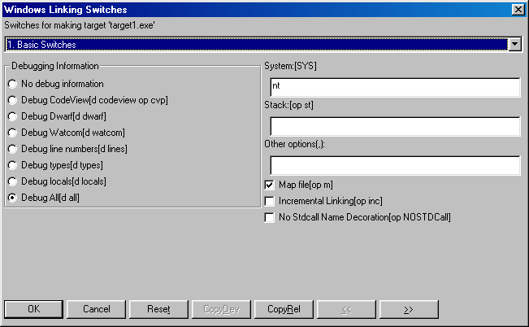
Figure 26. Use the Windows Linking Switches dialog to set command-line compiler and linker
options.
The first dialog allows you to choose the debugging information you want to see. Remember, if the option Use
Development Switches is enabled in the Target Options submenu of the Targets menu, the Integrated Development Environment
automatically sets switches to include all debugging information. You can change this setting by selecting Use Release
Switches from the Target Options submenu under the Targets menu or choosing specific switches in the Switches dialogs.
Select the CopyRel button in the Switches dialog to copy the set of Release switches to the current dialog.
You can then make further changes, as required. This button is available only if the Development switches are
selected in the Setup Target submenu under the Targets menu.
Select the CopyDev button in the Switches dialog to copy the set of Development switches to the current dialog.
You can then make further changes, as required. This button is available only if the Release switches are selected
in the Target Options submenu under the Targets menu.
Select the Reset button to reset the switches to the default Release or Development switches, as selected in the Target
Options submenu under the Targets menu.
(3)
- Click on OK when you are finished setting switches for the selected target.
The Switches dialog closes and you return to the Open Watcom IDE Project window.
Setting Source File Switches
The Switches function in the Source Options submenu of the Sources menu enables you to set switches for the compiler that
is associated with the selected source file or source file group.
- To set switches for a source file group:
-
(1)
- Click once on the target window that contains the relevant source files.
(2)
- Choose the appropriate item from the Options menu.
For example, to set switches for all ".c" files in the selected target, choose C Compiler Switches from the
Options menu.
The Compiler Switches dialog appears on the screen. The switches you access from this dialog affect only the
currently selected source file or source file group. There are eleven Switches dialogs for Open Watcom C/C++, each
one allowing you to set the following types of switches:
- File Option Switches
- Diagnostics Switches
- Source Switches
- Miscellaneous Switches
- Optimization Switches
- Debugging Switches
- CodeGen Strategy Switches
- Register Usage Switches
- CodeGen Option Switches
- Memory Model and Processor Switches
- C or C++ Compiler Switches
There are ten Switches dialogs for Open Watcom FORTRAN 77.
- File Option Switches
- Compile-time Diagnostic Switches
- Run-time Diagnostic Switches
- Debugging Switches
- Code Generation Strategy Switches
- Code Generation Option Switches
- Register Usage Switches
- Optimization Switches
- Application Type Switches
- Miscellaneous Switches
You can use the forward (>>) and backward (<<) buttons or the drop-down list to choose the set of switches
you want to set.
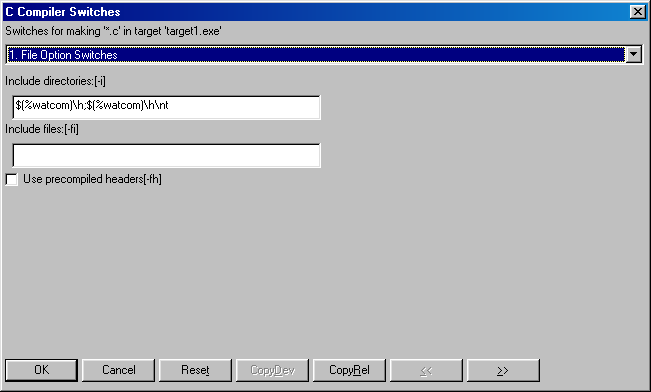
Figure 27. Use the C Compiler Switches dialog to set switches for the compiler associated
with the selected source file(s).
The first of several compiler switch dialogs appears. Of note is the sixth screen, Debugging Switches, which
allows you to choose the debugging information you want to see. Remember, if the option Use Development Switches is
enabled in the Target Options submenu of the Targets menu, the Integrated Development Environment automatically sets switches
to include all debugging information. You can change this setting by selecting Use Release Switches from the Target
Options submenu under the Targets menu or choosing specific switches in the Switches dialogs.
Select the CopyRel button in the Switches dialog to copy the set of Release switches to the current dialog.
You can then make further changes, as required. This button is available only if the Development switches are
selected in the Target Options submenu under the Targets menu.
Select the CopyDev button in the Switches dialog to copy the set of Development switches to the current dialog.
You can then make further changes, as required. This button is available only if the Release switches are selected
in the Target Options submenu under the Targets menu.
Select the Reset button to reset the switches to the default Release or Development switches, as selected in the Target
Options submenu under the Targets menu.
(3)
- Click on OK when you are finished setting switches for the selected source file or group of source files.
The Switches dialog closes and you return to the Open Watcom IDE Project window.
- To set switches for a specific source file:
-
(1)
- Click once on the source file for which you want to set switches.
The selected source file is highlighted.
(2)
- Choose Source Options from the Sources menu.
A submenu for the Source Options menu appears on the screen.
(3)
- Choose the appropriate item from the Source Options submenu.
For example, if the selected source file has a ".c" extension, choose C Compiler Switches from the Options menu.
The Compiler Switches dialog appears on the screen. The switches you access from this dialog affect only the
currently selected source file. There are eleven Switches dialogs for Open Watcom C/C++, each one allowing you to set
the following types of switches:
- File Option Switches
- Diagnostics Switches
- Source Switches
- Miscellaneous Switches
- Optimization Switches
- Debugging Switches
- CodeGen Strategy Switches
- Register Usage Switches
- CodeGen Option Switches
- Memory Model and Processor Switches
- C or C++ Compiler Switches
There are ten Switches dialogs for Open Watcom FORTRAN 77.
- File Option Switches
- Compile-time Diagnostic Switches
- Run-time Diagnostic Switches
- Debugging Switches
- Code Generation Strategy Switches
- Code Generation Option Switches
- Register Usage Switches
- Optimization Switches
- Application Type Switches
- Miscellaneous Switches
You can use the forward (>>) and backward (<<) buttons or the drop-down list to choose the set of switches
you want to set.
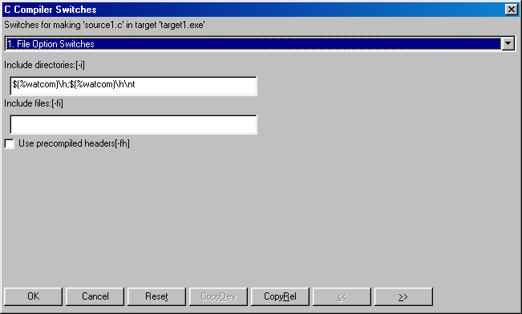
Figure 28. Use the C Compiler Switches dialog to set switches for the compiler associated
with the selected source file(s).
The first of several compiler switch dialogs appears. Of note is the sixth screen, Debugging Switches, which
allows you to choose the debugging information you want to see. Remember, if the option Use Development Switches is
enabled in the Target Options submenu of the Targets menu, the Integrated Development Environment automatically sets switches
to include all debugging information. You can change this setting by selecting Use Release Switches from the Target
Options submenu under the Targets menu or choosing specific switches in the Switches dialogs.
Select the CopyRel button in the Switches dialog to copy the set of Release switches to the current dialog.
You can then make further changes, as required. This button is available only if the Development switches are
selected in the Target Options submenu under the Targets menu.
Select the CopyDev button in the Switches dialog to copy the set of Development switches to the current dialog.
You can then make further changes, as required. This button is available only if the Release switches are selected
in the Target Options submenu under the Targets menu.
Select the Reset button to reset the switches to the default Release or Development switches, as selected in the Target
Options submenu under the Targets menu.
(4)
- Click on OK when you are finished setting switches for the selected source file or group of source files.
The Switches dialog closes and you return to the Open Watcom IDE Project window.
Using the Autodepend Switch
The Use Autodepend switch in the Target Options submenu of the Targets menu keeps track of updated source files.
Once a source is modified, the IDE remembers that it needs to be recompiled the next time you do a make. By using the
Use Autodepend switch, the IDE also keeps track of changes made to source files on which other source files depend.
For example, let's say that your current project has a source file, source.cpp, that depends on a header
file, source.hpp. If the Use Autodepend feature is not enabled and changes are made to source.hpp
after source.cpp in your current project has been compiled, the IDE does not recognize that your current source
file is now out of date. This means that the next time you do a make, the IDE will not compile source.cpp.
The Use Autodepend feature tells the IDE to compare the date and time stamps on all of the dependent source files in
addition to the source files in the current project and their corresponding object files, so the IDE recognizes when your
current source file needs to be recompiled.
- To set the Use Autodepend switch:
-
(1)
- Choose Target Options from the Targets menu.
A submenu appears from the Target Options menu. A check mark beside the menu option indicates that it is enabled.
(2)
- Select the Use Autodepend option from the Target Options submenu.
If the option was enabled when you selected it, you have disabled the Use Autodepend feature. If the option had
no check mark when you selected it, you have enabled the Use Autodepend feature.
Configuring the Integrated Development Environment
The Integrated Development Environment can be reconfigured to some extent. You can customize the following features.
- Show or hide the Toolbar
- Show or hide the Status Bar
- Enable or disable automatic updates of file status in the target windows
- Select your own text editor
- Select a source revision control system
The next few sections describe these features.
The Integrated Development Environment Toolbar that appears under the Menu Bar can be removed from or added to the IDE
window.
- To add or remove the toolbar:
-
(1)
- Choose File from the menu bar.
A checkmark beside Show Tool Bar indicates that the toolbar is present on the screen.
(2)
- Select Show Tool Bar.
The Show Tool Bar state will be toggled. If the toolbar was on the screen, it will disappear. If the toolbar
was not on the screen, it will reappear.
Show Status Bar
The Integrated Development Environment Status Bar that appears at the bottom of the IDE window can be removed from or
added to the screen.
- To add or remove the status bar:
-
(1)
- Choose File from the menu bar.
A checkmark beside Show Status Bar indicates that the status bar is present on the screen.
(2)
- Select Show Status Bar.
The Show Status Bar state will be toggled. If the status bar was on the screen, it will disappear. If the
status bar was not on the screen, it will reappear.
Auto Refresh
The IDE will automatically update the target windows with the state of all files when this option is enabled.
- To enable or disable auto refresh:
-
(1)
- Choose File from the menu bar.
A checkmark beside Auto Refresh indicates that auto refresh is enabled.
(2)
- Select Auto Refresh.
The Auto Refresh state will be toggled. When Auto Refresh is disabled, it may be necessary to select Refresh from
the Window menu whenever the target window status becomes out of date.
Selecting Your Own Text Editor
You can use your own favourite text editor from within the Integrated Development Environment.
- To select your own text editor:
-
(1)
- Choose Set Text Editor from the File menu.
The Set Text Editor dialog appears. You can enter the name of the text editor in the first field. You must
also indicate whether the text editor is an executable file or a Dynamic Link Library (DLL). If the editor is an executable
file (rather than a DLL), then you can enter an argument line in the second field. The argument line will be supplied
to the editor whenever it is started by the IDE. The argument line can include any of three different macros which
will be filled in by the IDE. The macros are:
- %f
- The name of the file to be edited.
%r
- The row in the file at which to position the cursor. If the editor is invoked from a diagnostic message which contains
a line number then the row value is extracted from the message; otherwise the row value is 1.
%c
- The column in the file at which to position the cursor. If the editor is invoked from a diagnostic message which contains
a column number then the column value is extracted from the message; otherwise the column value is 1.
For example, if the editor argument line that you specified was:
file='%f' row='%r' col='%c'
and you double click on an error message in the Log window that names the file foobar.c with an error at
line 215 and column 31, then the argument line that is passed to your editor is:
file='foobar.c' row='215' col='31'
This flexibility allows you to specify the name of the file to edit and the row and/or column at which to position
the text cursor. If no row or column is available, then the IDE will supply the value of 1 as a default.
(2)
- Select OK when you wish to confirm the selection of a new editor.
or
- Select Cancel when you wish to cancel the selection of a new editor.
or
- Select Default when you wish to restore the default editor selection and then select OK or Cancel.
Selecting a Source Revision Control System
You can use a source code Revision Control System (RCS) in conjunction with the Integrated Development Environment.
- To select a revision control system
-
(1)
- Choose Set Source Control from the File menu.
A number of options are presented:
- MKS RCS
- Mortice Kern Systems Revision Control System
MKS SI
- Mortice Kern Systems Source Integrity
PVCS
- Intersolv Project Version Control System
Other
- Any other flavour of revision control system (default)
None
- No revision control system
Object Cycle
- Powersoft's Object Cycle
Perforce
- Perforce
When you select a source revision control system, the Checkout Source and Checkin Source items in the Sources menu are
enabled. The Checkout Source and Checkin Source items spawn batch/command files or dialogs corresponding to your selection
of revision control system. The batch/command files are located in the \WATCOM\BINW and \WATCOM\BINP directories.
These files can be modified to suit your environment.
- MKS RCS
-
- MKS_CO
- for checking out/locking files with MKS RCS
MKS_CI
- for checking in/unlocking files with MKS RCS
MKS SI
-
- Checkout Dialog
- a check out dialog will appear on the screen when using MKS SI
Checkin Dialog
- a check in dialog will appear on the screen when using MKS SI
PVCS
-
- PVCS_CO
- for checking out/locking files with Intersolv PVCS
PVCS_CI
- for checking in/unlocking files with Intersolv PVCS
Other
-
- GEN_CO
- a file which you can edit to provide check out (and lock) functionality to any generic revision control system
GEN_CI
- a file which you can edit to provide check in (and unlock) functionality to any generic revision control system
None
- When selected, Checkout Source and Checkin Source are disabled.
When one of the batch files is spawned, a number of arguments are passed to the batch file.
For checking out files, the following arguments are passed:
- "pause" or "nopause" to enable optional screen pause after completion of action
- full source file path specification
- full project file path specification (.wpj file)
- full target file path specification (.tgt file)
For checking in files, the following arguments are passed:
- full source file path specification
- full message file path specification (this file contains the textual message that you enter when checking in a file)
- full project file path specification (.wpj file)
- full target file path specification (.tgt file)
Executing Special Commands
Sometimes you may find it necessary to execute commands before and/or after performing a make. The Open Watcom Integrated
Development Environment provides Before and After commands in the File and Targets menus. These commands enable you
to perform actions immediately before or after making either the selected target or all targets for the current project.
- To set Before or After directives:
-
(1)
- Click once on the target for which you want to set a before or after directive.
The title bar of the selected target is highlighted.
(2)
- Choose Target Options from the Targets menu.
A submenu appears from the Target Options menu.
(3)
- Choose Execute Before or Execute After from the Target Options submenu.
A Target Before or Target After dialog appears on your screen.
- Note:
- If you want to set before or after directives to be executed when you make all targets, select the before and after commands
from the File menu.
(4)
- Enter the command you want to execute before or after the selected target is made.
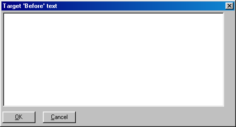
Figure 29. Enter execute commands in the Target Before or Target After dialogs.
(5)
- Click on OK to continue.
The IDE stores the information you entered and closes the dialog. When you next perform a make on the selected target,
the IDE will execute the before or after directive you entered.
Adding Resources to a Target
You may want to include resources in your target executable. There are two ways of doing this in the IDE:
indirectly and directly. The act of adding resources to a target can only be done for targets that support resources,
such as Windows or OS/2 PM.
- To add a resource to a target using the indirect method:
-
(1)
- Create a new source file with the extension ".rc".
(2)
- Click once on the new source file to select it.
(3)
- Choose Edit Text from the Sources menu to invoke the Open Watcom Editor.
The editor opens on your screen with an empty window. You can now add the resource file text.
(4)
- Enter the resource statements in the editor.
(5)
- Save your work and close the editor when you are finished.
You return to the Open Watcom IDE Project window. You can now compile the new source file.
(6)
- Click once on the new source file to select it.
The selected source file is highlighted in the target window.
(7)
- Choose Make from the Sources menu to compile the new source file.
The IDE compiles the selected source file. To do this, the IDE invokes the Resource Compiler which creates a ".res"
file. The ".res" file will be automatically included in the target when it is linked.
When you create the resource file directly, the source file contains the same information but it is stored in a different
format.
- To add a resource to a target using the direct method:
-
(1)
- Create a new source file with the extension ".res".
(2)
- Click once on the new source file to select it.
(3)
- Choose Edit Resources from the Sources menu to invoke the Open Watcom Resource Editor.
The editor opens on your screen with an empty window. You can now create the resources.
(4)
- Create the resources.
(5)
- Save your work and close the editor when you are finished.
You return to the Open Watcom IDE Project window. You can now compile the new source file.
(6)
- Click once on the new source file to select it.
The selected source file is highlighted in the target window.
(7)
- Choose Make from the Sources menu to compile the new source file.
The IDE compiles the selected source file. The IDE does not need to invoke the Resource Compiler to create a ".res"
file because you created the ".res" file directly using the Resource Editor. The ".res" file will
be automatically included in the target when it is linked.
Including Libraries in a Target
You use the same procedure to include static and DLL libraries in your target as you use to add any source file to a target.
The IDE includes the libraries when the target is linked.
- To create static and DLL libraries:
-
(1)
- Create a new target entering the library name in the Target Name field and choosing the appropriate image type.
Clicking on OK on the New Target dialog closes the dialog and creates a new target with the specified name in the title
bar.
(2)
- Add the desired source files, new or existing, to the library you have created.
- Note:
- If you want one of your other targets to use that library, you must enter the library as a source file for that target.
When you enter the library as a source file you must give it the extension ".lib", regardless of whether the library
is a static or DLL library. For example, if your library is entitled Target A and you want your existing Target B to
use that library, add Target A as a source file on Target B with the extension ".lib".
Targets and Image Types Supported by the IDE
The IDE supports the creation of a wide variety of targets. The following sections summarize the choices available.
Win32 Targets
- Character-mode Executable [.exe]
-
The target is a non-GUI Win32 application.
Windowed Executable [.exe]
-
The target is a GUI Win32 application.
Dynamic Link Library [.dll]
-
The target is a Win32 DLL.
Library [.lib]
-
The target is a Win32 library.
Help File [.hlp]
-
The target is a help file.
Win16 Targets
- Executable [.exe]
-
The target is a 16-bit Windows application.
Dynamic Link Library [.dll]
-
The target is a 16-bit Windows DLL.
Library [.lib]
-
The target is a 16-bit Windows library.
Help File [.hlp]
-
The target is a help file.
Win386 (Watcom Extender) Targets
- Executable [.exe]
-
The target is a 32-bit Open Watcom Windows extender application.
Dynamic Link Library [.dll]
-
The target is a 32-bit Open Watcom Windows extender DLL.
Library [.lib]
-
The target is a 32-bit Open Watcom Windows extender library.
Help File [.hlp]
-
The target is a help file.
DOS - 16-bit Targets
- Executable [.exe]
-
The target is a 16-bit DOS .exe file.
.COM Executable [.com]
-
The target is a 16-bit DOS .com file.
Library [.lib]
-
The target is a 16-bit DOS .lib file.
DOS - 32-bit Targets
- CauseWay Executable [.exe]
-
The target is a 32-bit CauseWay .exe file.
CauseWay DLL (register based) [.dll]
-
The target is a 32-bit CauseWay dll using register-based calling conventions.
CauseWay DLL (stack based) [.dll]
-
The target is a 32-bit CauseWay dll using stack-based calling conventions.
DOS4GW Executable [.exe]
-
The target is a 32-bit DOS/4GW .exe file.
PMODW/W Executable [.exe]
-
The target is a 32-bit PMODE/W .exe file.
DOS32/A Executable [.exe]
-
The target is a 32-bit DOS32/A .exe file.
Pharlap Executable [.exp]
-
The target is a 32-bit PharLap "RUN386" .exe file.
Pharlap TNT Executable [.exe]
-
The target is a 32-bit PharLap TNT .exe file.
Flashtek Executable [.exe]
-
The target is a 32-bit FlashTek .exe file using register-based calling conventions.
Flashtek -- Stack based [.exe]
-
The target is a 32-bit FlashTek .exe file using stack-based calling conventions.
Library [.lib]
-
The target is a 32-bit DOS .lib file.
OS/2 - 16-bit Targets
- Executable [.exe]
-
The target is a 16-bit OS/2 console application.
PM Executable [.exe]
-
The target is a 16-bit OS/2 Presentation Manager application.
Fullscreen Executable [.exe]
-
The target is a 16-bit OS/2 Fullscreen application.
Dynamic Link Library [.dll]
-
The target is a 16-bit OS/2 DLL.
Library [.lib]
-
The target is a 16-bit OS/2 library file.
Help File [.hlp]
-
The target is an OS/2 help file (HLP format).
INF File [.inf]
-
The target is an OS/2 help file (INF format).
OS/2 - 32-bit Targets
- Executable [.exe]
-
The target is a 32-bit OS/2 console application.
PM Executable [.exe]
-
The target is a 32-bit OS/2 Presentation Manager application.
Fullscreen Executable [.exe]
-
The target is a 32-bit OS/2 Fullscreen application.
Virtual Device [.exe]
-
The target is a 32-bit OS/2 Virtual Device Driver application.
Dynamic Link Library [.dll]
-
The target is a 32-bit OS/2 DLL.
Library [.lib]
-
The target is a 32-bit OS/2 library file.
Help File [.hlp]
-
The target is an OS/2 help file (HLP format).
INF File [.inf]
-
The target is an OS/2 help file (INF format).
Linux Targets
- Executable [.exe]
-
The target is a Linux application.
Shared Library [.dll]
-
Shared libraries are not yet supported.
Library [.lib]
-
The target is a Linux static library file.
Invoking Other Applications from the IDE
When using the Open Watcom Integrated Development Environment, there are several other applications you may want to use.
To save you the frustration of having to constantly exit the IDE and start up a new application, we have made it possible
to invoke other applications from within the Integrated Development Environment. Following are the applications you
can invoke from the IDE:
- Browser
- Open Watcom Debugger
- Open Watcom Execution Sampler
- Open Watcom Execution Profiler
- Open Watcom Disassembler
- Open Watcom Editor (text editor)
- Open Watcom Resource Editor
- Open Watcom Zoom
- Open Watcom Heap Walker
- Spy
- DDE Spy
You invoke these applications by making a selection from the toolbar or various menus in the IDE. The Actions menu
contains some of the applications. You can find others in the Targets and Sources menus. The menu options that
appear vary, depending on the contents of the current project. The applications are available in the menu items only
when appropriate. For example, if the currently selected target has no source files, no applications appear in the
Sources menu.
Hint: An alternate way to view the contents of the Targets and Sources menu is to click the right
mouse button while your cursor is positioned in the project window. If your cursor is positioned over a target, the
Targets menu appears. If your cursor is positioned over a source file, the Sources menu appears.
Refer to the appropriate sections in this manual for detailed information on using the various applications.
Invoking DOS Applications from the IDE under OS/2
There are occasions where you may wish to change the default DOS or WIN-OS/2 settings when running a DOS/Windows application
from the IDE. The mechanism which we provide is through the use of a special IDE_DOS_SETTINGS environment variable.
For example, to set the DPMI memory limit to 16 and to enable DOS BREAK, you can set the environment variable as follows:
Example:
set ide_dos_settings=dpmi_memory_limit#16;dos_break#1
Due to the command processor limitations, the "#" character is used in place of the "=".
The above command is equivalent to configuring a DOS session with DOS settings as follows:
Variable Value
DPMI_MEMORY_LIMIT 16
DOS_BREAK ON
The batch utility IDE2MAKE generates .mk and .mk1 makefiles for use with Open Watcom Make from the IDE .wpj and .tgt files.
See IDE2MAKE in Open Watcom Tools User's Guide.